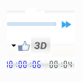
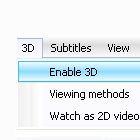
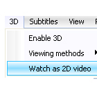
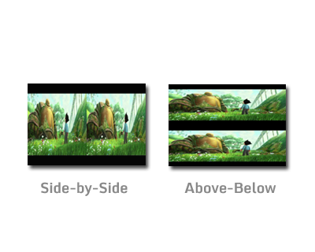
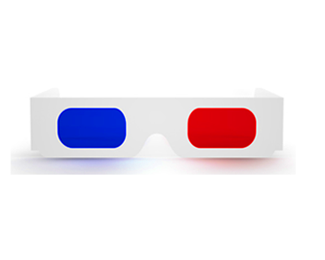
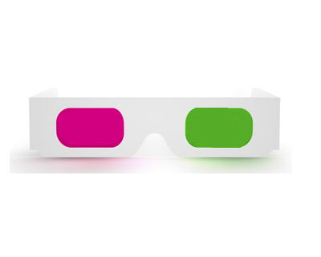
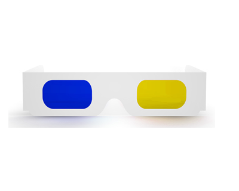
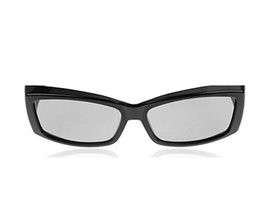

Turn on 3D
Put your 3D glass and turn on 3D using 3D button or using menu.
3D Menu
3D menu is a full featured menu that will fulfill all your 3D needs.
No 3D glass!
You got a 3D video but you don't have a 3D glass!..Hmmm,Don't worry...using ExMplayer you can watch 3D video as normal video with just click

3D Input format Selection
3D video can be Side by Side or Above-Below format.ExMplayer will automatically ask you about input format. These are the formats supported- Side-by-Side
- Side-by-Side Half size
- Above-Below
- Above-Below Half size
3D Glass Selection

Classic Red/Cyan Glass
Watch 3D using classic Red/Cyan glass.Supported output modes- Anaglyph Red/Cyan color
- Anaglyph Red/Cyan Dubois
- Anaglyph Red/Cyan half colored
- Anaglyph Red/Cyan gray
Tip To use Red/Cyan glassfrom the menu 3D->Viewing methods->3D output formats->anaglyph red cyan duboius

Green/Magenta Glass
Watch 3D using Green/Magenta glass.Supported output modes- Anaglyph Green/Magenta color
- Anaglyph Green/Magenta half colored
- Anaglyph Green/Magenta gray
Tip To use Green/Magenta glass from the menu 3D->Viewing methods->3D output formats->anaglyph green magenta color

Yellow/Blue Glass
Watch 3D using Yellow/Blue glass.Supported output modes- Anaglyph Yellow/Blue color
- Anaglyph Yellow/Blue half colored
- Anaglyph Yellow/Blue gray
Tip To use Yellow/Blue glass from the menu 3D->Viewing methods->3D output formats->anaglyph yellow blue color

Polarized Glass
You can use passive polarized glass to watch 3D.Supported output modes- Interleave rows left first
- Interleave rows right first
Before using ploarized glass please note that your monitor must be capable of 3D.
Tip To use ploarized glass from the menu 3D->Viewing methods->3D output formats->interleave rows left first